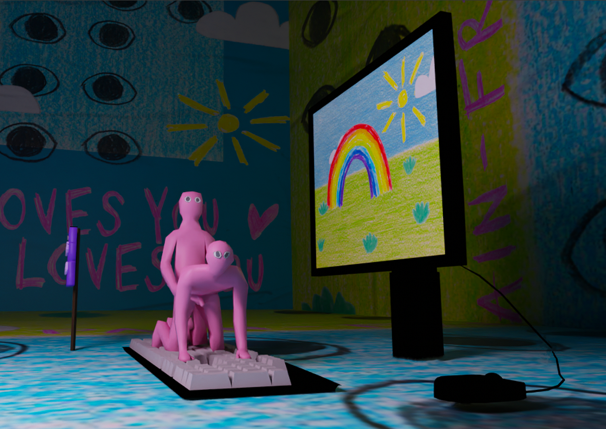
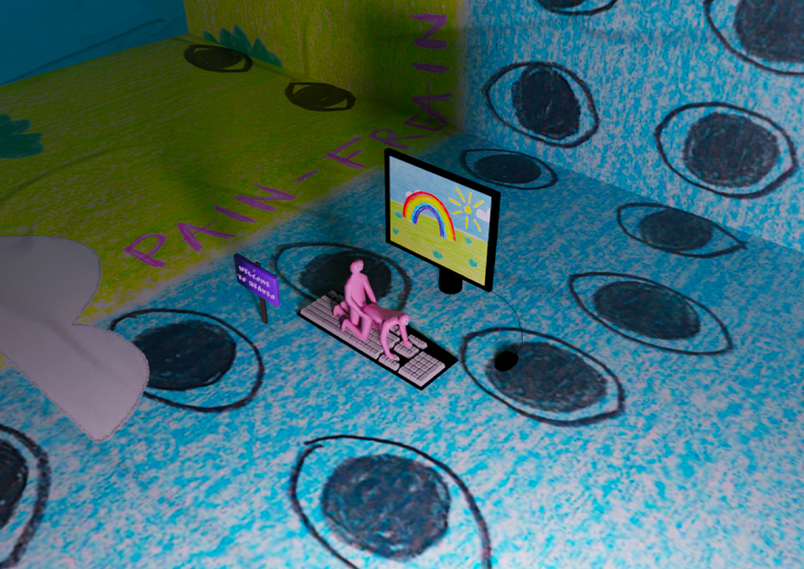
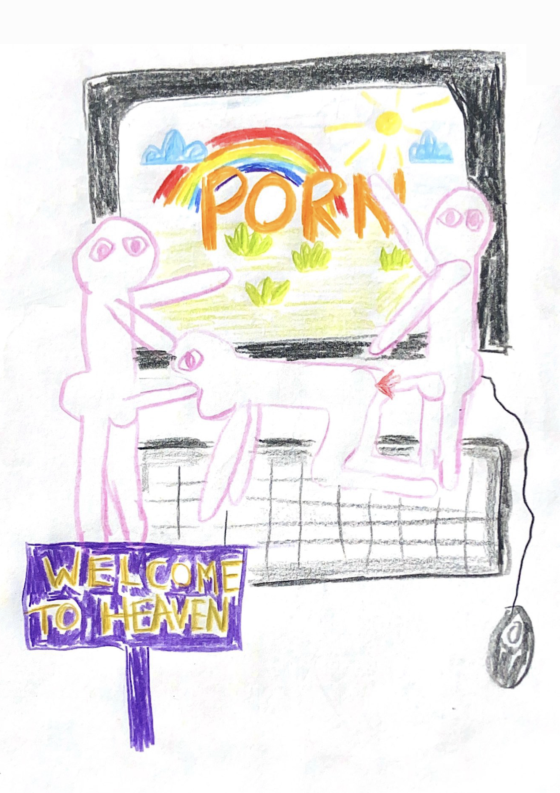
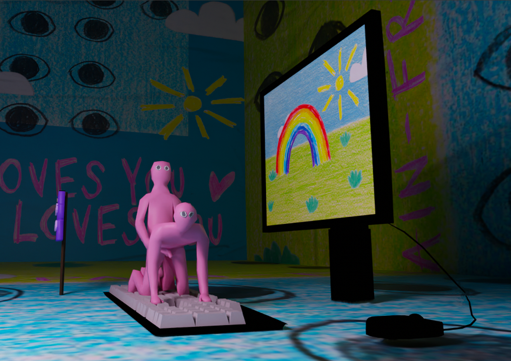
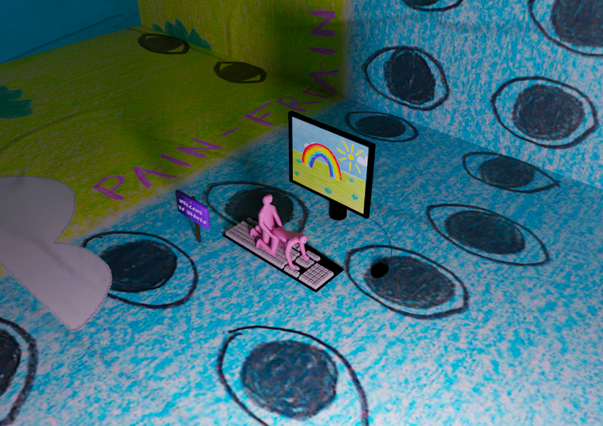
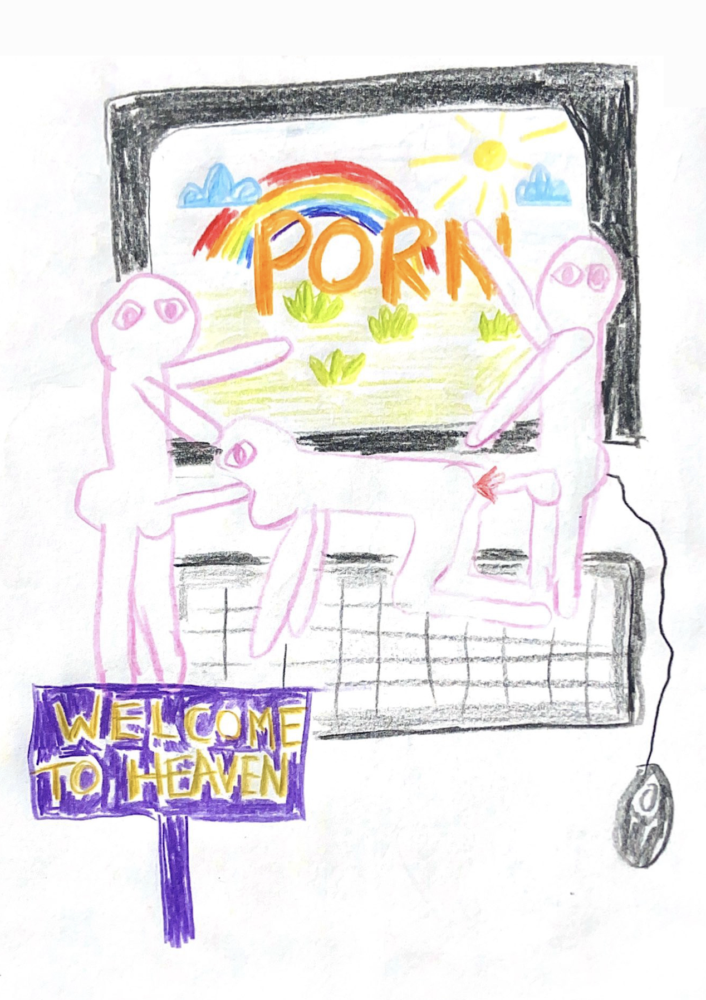

Daddy Loves You is an animated 3D model inspired by the artist Paul Yore. It invites viewers into a world where everything is seemingly perfect, prompting reflection on the stark contrasts between this idealised reality and the pressing issues in our world, such as social inequality, environmental degradation and media influence.
 




